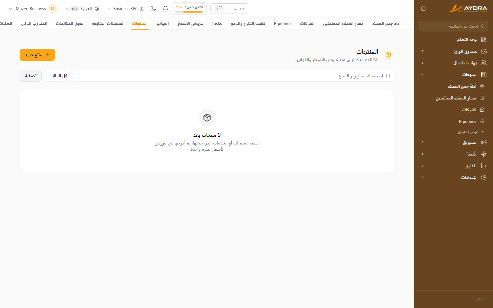
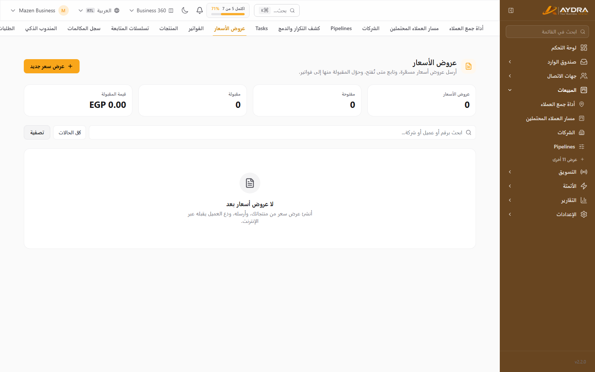
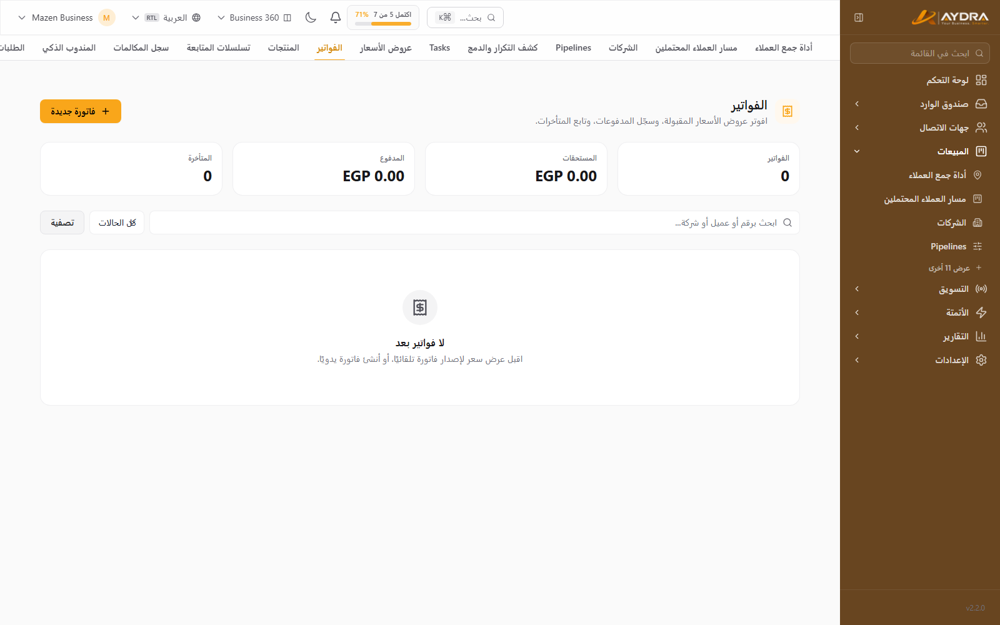
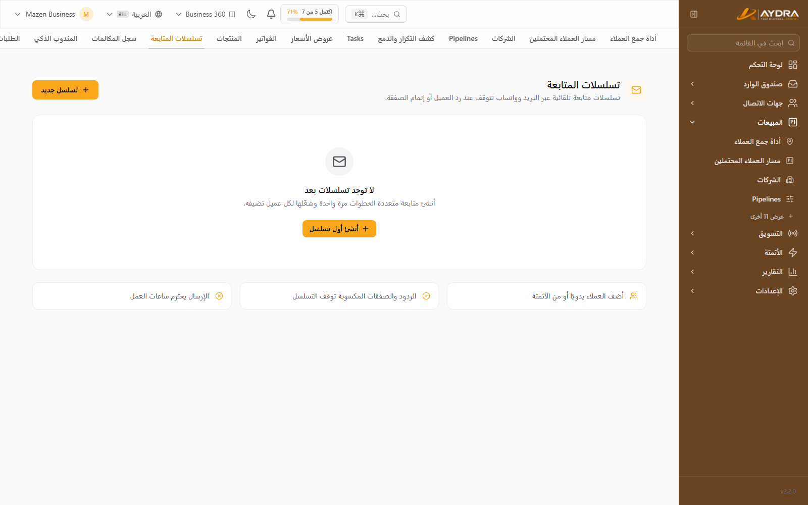
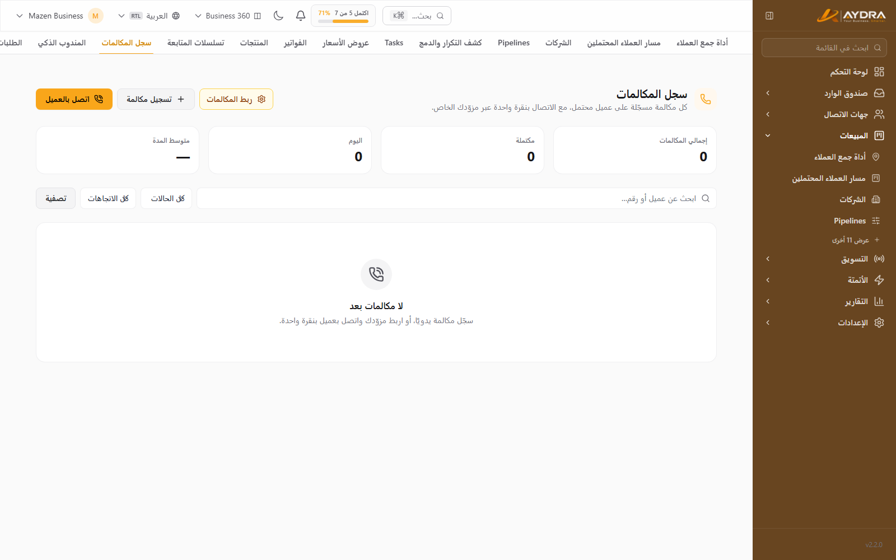
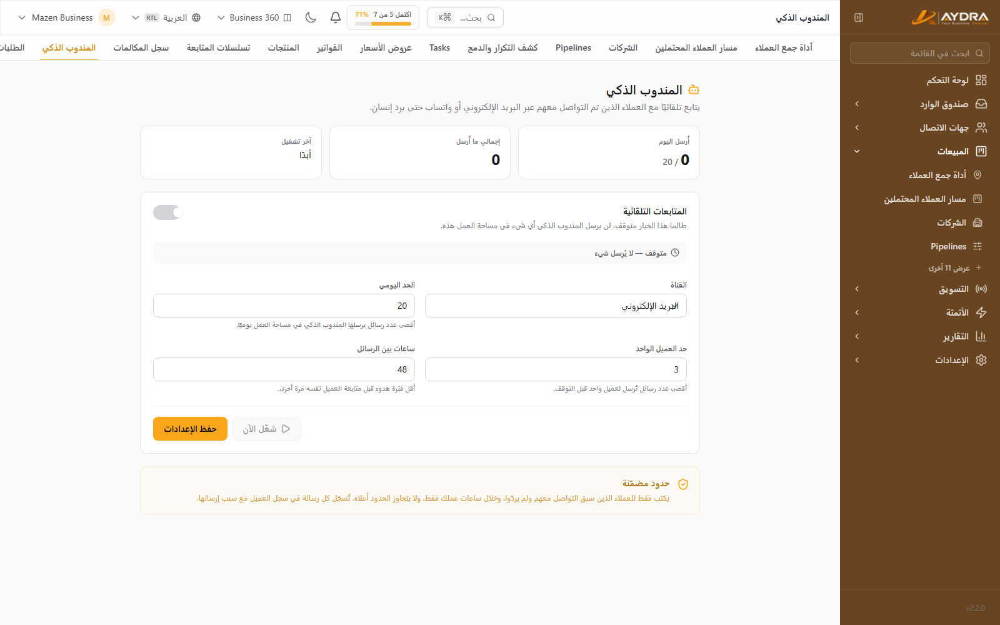

المبيعات والعروض والفواتير
بعد أن يصبح الليد جاهزًا، هنا تُنهي الصفقة: منتجات، عرض سعر، فاتورة، متابعة آلية، ومكالمات مسجّلة. كل قسم أدناه مستقل — ابدأ بالمنتجات.
هذه الشاشات مشمولة في الباقات التي تحتوي Quotes وSequences وCall Logs. لو لا تراها في القائمة الجانبية، فراجع باقتك.
1. المنتجات (Products)

من المبيعات ← المنتجات. المنتجات هي الأساس الذي تُبنى منه بنود العروض والفواتير.
- أضف المنتج: الاسم، الوصف، السعر، العملة، والوحدة.
- يمكن إضافة صور أو روابط إن كانت مشمولة.
- المنتجات غير المرتبطة بمتجر إلكتروني تُدار يدويًا.
- عند بناء عرض سعر، اختر المنتجات وحدّد الكميات.
2. عروض الأسعار (Quotes)

من المبيعات ← العروض.
- اضغط عرض جديد.
- اختر العميل (جهة اتصال أو ليد).
- أضف البنود: المنتج، الكمية، السعر، الخصم، الضريبة.
- حدّد مدة الصلاحية والشروط.
- احفظ كمسودة ثم اضغط إرسال.
ما يحدث بعد الإرسال
- يصل للعميل رابط عام آمن (بدون تسجيل دخول).
- يمكنه قبول أو رفض العرض من نفس الرابط.
- يمكنه تحميل نسخة PDF.
- حالة العرض تتحدّث تلقائيًا في النظام.
تحويل العرض إلى فاتورة
بعد القبول اضغط تحويل إلى فاتورة — تُنسخ البنود والعميل وتُصبح فاتورة قابلة للتحصيل.
3. الفواتير (Invoices)

من المبيعات ← الفواتير.
- أنشئ فاتورة جديدة (أو حوّل عرضًا مقبولًا).
- راجع البنود وتاريخ الاستحقاق.
- أرسلها للعميل — يصل رابط عام + PDF.
- سجّل الدفعات من زر إضافة دفعة (كامل أو جزئي).
- تظهر حالة الفاتورة: غير مدفوعة / مدفوعة جزئيًا / مدفوعة.
الضريبة تُحسب حسب إعدادات الضرائب في المنصة. تأكد من ضبط نسبة الضريبة قبل إصدار أول فاتورة.
4. التسلسلات البريدية (Sequences)

متابعة آلية على عدة خطوات بريدية. من المبيعات ← التسلسلات.
- أنشئ تسلسلًا جديدًا.
- افتح المنشئ (Builder) وأضف الخطوات: بريد أول، انتظار، بريد ثانٍ… إلخ.
- اكتب موضوع ونص كل خطوة، واستخدم المتغيرات (اسم العميل…).
- فعّل التسلسل.
- أضف جهات الاتصال/الليدز يدويًا أو عبر أتمتة (إجراء «تسجيل في تسلسل»).
- يوجد رابط إلغاء اشتراك تلقائي في كل بريد (One-click Unsubscribe).
- من أُلغى اشتراكه يظهر في غير المشتركين ولا يستقبل خطوات جديدة.
- يمكن إيقاف التسلسل مؤقتًا (Paused) دون حذفه.
5. سجل المكالمات (Call Log)

من المبيعات ← المكالمات (يشمل Click-to-Call إن كان مزوّد الاتصال مضبوطًا).
- اضغط على رقم العميل لبدء مكالمة (Click-to-Call).
- بعد انتهاء المكالمة، سجّل النتيجة: متصل، لم يرد، مشغول، أو أضف مكالمة يدويًا.
- أضف ملاحظات المكالمة.
- إن كانت ميزة AI Sales متاحة، استخدم تلخيص المكالمة لتحويل النص إلى ملخص ونقاط متابعة (يستهلك توكنز).
6. AI SDR

مندوب مبيعات آلي يتابع الليدز تلقائيًا حتى يرد إنسان. من المبيعات ← AI SDR.
- فعّل الميزة.
- اضبط النبرة والرسائل وساعات العمل وعدد المتابعات.
- اضغط تشغيل لبدء الدورة.
- يتوقف التسلسل تلقائيًا بمجرد رد العميل، ويتحوّل لك.
AI SDR يستهلك توكنز الذكاء الاصطناعي. راقب الاستهلاك من تقارير AI، وابدأ بعدد متابعات قليل.
7. مساعد المبيعات الذكي
داخل ملف الليد (ميزة AI Sales) تجد:
- Lead Coach: اقتراحات للخطوة التالية ورسالة متابعة.
- وسوم ذكية: تصنيف تلقائي للاهتمام.
- تلخيص المحادثة: ملخص سريع لآخر التفاعلات.
كل هذه الميزات تستهلك من حد التوكنز الشهري.
أخطاء شائعة
| المشكلة | السبب | الحل |
|---|---|---|
| زر «إرسال العرض» لا يعمل | لا يوجد بريد للعميل أو SMTP غير مضبوط | أضف بريدًا واختبر سيرفر البريد |
| العميل لم يستلم العرض | البريد في Spam أو SMTP فاشل | أرسل الرابط يدويًا واختبر SMTP |
| لا يمكن التحويل لفاتورة | العرض غير مقبول بعد | اقبله يدويًا أو انتظر العميل |
| التسلسل لا يرسل | غير مفعّل أو المستخدم غير مشترك | تحقق من الحالة وقائمة غير المشتركين |
| مكالمة لا تبدأ | مزوّد الاتصال غير مضبوط | اضبط إعدادات المكالمات أولًا |
| «وصلت لحد التوكنز» | استهلاك AI مرتفع | البيانات تعمل، لكن الطلبات الجديدة تتوقف — رقّي الباقة |
الخطوة التالية: اربط المبيعات بالتسويق عبر دليل الحملات والسوشيال.